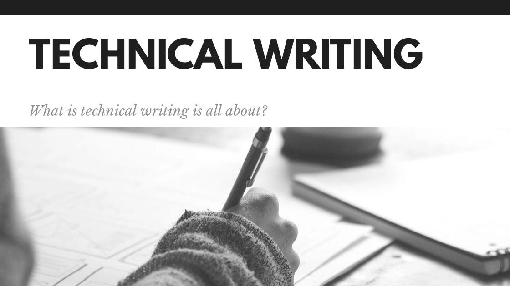
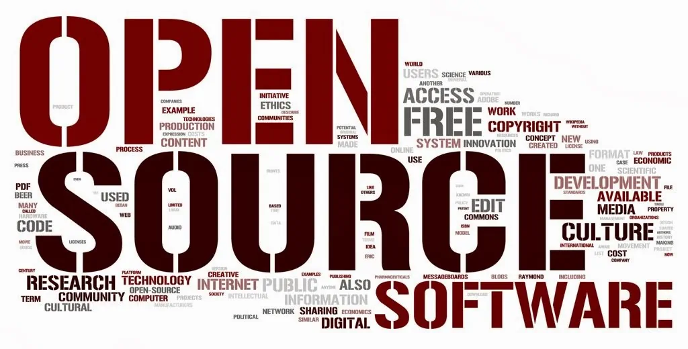

Technical Writing
Technical Writer adalah sebuah posisi pekerjaan dimana orang tersebut berfokus untuk membangun terhadap dokumentasi teknis yang ada di perusahaan nya, berbagai macam jenis dokumentasi dikerjakan oleh Technical Writer, misalnya FSD atau TRD dimana dokumentasi ini penting untuk memenuhi requirement yang dibutuhkan oleh tim teknis sebelum melakukan pengembangan produk.
Saya sendiri memulai karir saya sebagai Technical Writer 3 tahun yang lalu pada tahun 2019, bekerja dibeberapa macam perusahaan mulai dari level startup, corporate, hingga organisasi open source. Technical Writer merupakan karir dengan prospek yang lumayan baik di masa depan karena saat ini pertumbuhan dunia technical writing serta penerapan dokumentasi di beberapa perusahaan besar yang mempercayai dokumentasi dengan posisi ini.
Blogpost
Bagian ini terdapat beberapa blogposts yang mungkin kalian sukai dan sesuai, bacalah bila sempat.

Blogpost 1: Docs-as-Code approach, Pendekatan docs-as-code (atau terkadang docs-like-code) berarti Kamu membuat dan memelihara dokumentasi sama ketatnya dengan kode pemrograman Kamu. Penulis teknis dapat menjadi anggota tim tangkas, sehingga mereka bekerja dalam sprint, dan mereka menggunakan IDE dan alur kerja yang sama (atau serupa) sebagai pengembang.
Blogpost 2: Document Development Life Cycle, adalah proses sistematis pembuatan dokumen yang memiliki urutan siklus. Penulis teknis dan pengembang konten perlu mengetahui DDLC karena memungkinkan untuk meningkatkan kualitas dokumentasi, ketepatannya, dan waktu pengiriman.
Blogpost 3: Markdown, senjata perang technical writer masa kini, Markdown dibuat oleh John Gruber pada tahun 2004 untuk memungkinkan orang "menulis menggunakan format teks biasa yang mudah dibaca dan ditulis, secara opsional mengubahnya menjadi XHTML (atau HTML) yang valid secara struktural". Jadi, Markdown adalah bahasa markup yang ringan menggunakan sintaks pemformatan teks biasa. Markdown tidak semudah Microsoft Word, di mana Kita cukup mengklik tombol untuk memformat kata dan teks secara umum. Markdown seperti HTML — Kamu perlu menunjukkan kata dan frasa mana yang terlihat berbeda, tetapi Markdown lebih mudah daripada HTML. Misalnya, untuk membuat paragraf, gunakan baris kosong untuk memisahkan satu atau beberapa baris teks. Kamu tidak boleh membuat indentasi paragraf dengan spasi atau tab.
Portofolio
Mari dilihat penjelasan dan kontribusi saya terhadap beberapa portofolio dibawah ini.
Open Source Portofolio
Ansible Docs Contributor (2022), Tujuan dari kesempatan ini adalah untuk memberikan pengalaman kepada technical writer yang terlibat dalam dokumentasi open source project dan aktivitas di github yang dapat kita bagikan dengan calon pemberi kerja. Dan dalam prosesnya, Ansible mendapatkan beberapa peningkatan Dokumen.
AsyncAPI (2022), AsyncAPI merupakan paltform open source yang berfokus terhadap implementasi event-driven API, Technical Writer berfokus untuk mengerjakan beberapa issue yang ada di website hingga generator
The Mifos Initiative (2020), Merupakan NGO yang berfokus terhadap financial service technology, disini saya sebagai konsultan juga dan memberikan beberapa masukan-masukan yang baik untuk dokumentasi, juga berpartisipasi terhadap Google Season of Docs 2021
Private Source Portofolio
Teruntuk recruiter yang ingin melihat lebih lengkap lagi terkait portofolio yang saya miliki, silahkan kontak saya melalui email di luphieanza@gmail.com.